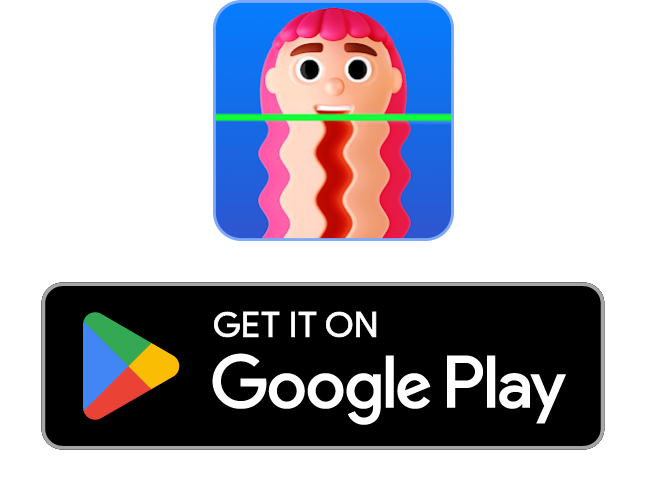

Scroll Down
With Time Warp create unforgettable moments
with family and friends in fun, unique videos!
TimeWarp:
Capture Stunning Visual
Effects in Real-Time.
Effects in Real-Time.
Time Warp:
Trendy Filter

Enhancing User Experience with a Rich Color Palette and Distinctive Typography
Color Palette & Typography
App's dark theme sets the stage for a sleek, modern aesthetic. The color palette features bold, vibrant accents against deep, muted backgrounds, creating a visually stunning contrast. Carefully chosen typography enhances readability and style, adding a sophisticated edge to the user experience. Each color and font choice is designed to be both functional and visually appealing, ensuring a seamless and engaging interaction for all users.
Project Timeline
The project spans 9 weeks, starting with discovery and research to understand project goals and audience. This is followed by concept development, wireframing, and creating initial layouts. Visual designs are developed based on feedback in the following weeks. Prototyping and stakeholder reviews ensure the design meets all requirements. The last weeks focus on revisions, adjustments, and preparing the design for delivery and launch.

Unleash Your Creativity
Time Warp Wireframe
Time Warp Wireframe is an advanced video editing app designed to bring your videos to life with dynamic effects, audio enhancements, and intuitive controls. Explore each feature to maximize your creative output.
Intuitive Landing Screen - Start your journey with the Time Warp Wireframe’s sleek and user-friendly landing screen. Instantly navigate to your desired features, whether you're starting a new project, browsing effects, or checking out the latest music options. The landing screen is designed to make your creative process smooth and enjoyable.
Effortless Social Sharing - Once your masterpiece is ready, share it directly from the app to your favorite social media platforms. Time Warp Wireframe provides instant sharing to Instagram, TikTok, and more.
Advanced Editing Section - It is designed for creators who want to add a fun and artistic edge to their videos. The app combines intuitive controls with advanced features to help you craft engaging and shareable content.
Streamlined Purchase Screen - Unlock premium effects and music with ease through the purchase screen. The app offers exclusive content, including advanced visual effects and additional music tracks, to take your videos to the next level.
Mesmerizing Warp Effects - Unlock the full potential of time warp magic with a range of distortions and visual tricks. The signature moving blue line effect freezes moments, allowing you to create elongated shapes, quirky face distortions, or abstract designs. Time Warp Effects add a creative twist to every frame.
Seamless Music Integration - Enhance your videos with built-in music tracks or import your favorite songs. The app offers a curated selection of soundtracks that sync perfectly with your video edits, allowing you to set the right mood. Add background music to elevate your content and make it more engaging for your audience.
Time Warp Wireframe takes video editing to the next level, empowering creators with an extraordinary range of tools to craft standout content.With over 12 unique effects, and an innovative green screen feature, Time Warp Wireframe offers an unparalleled creative experience that sets it apart from the competition. Every video becomes a canvas for your imagination, ensuring each project feels fresh, engaging, and completely unique.
Purpose of Time Warp
Creative Video Editing
with Effects
Time Warp Scan is a powerful video editing app that allows you to create stunning videos with unique time warp effects. Use the moving blue line to create fun distortions, add creative twists to your content, and enhance your videos with built-in effects and music options. Perfect for video creators who want to stand out with engaging content.
Explore Every Detail at a Glance.
"Dive into the core features with a preview of all the major app screens, giving you a comprehensive look at the seamless user experience that have been crafted."